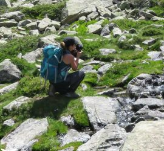
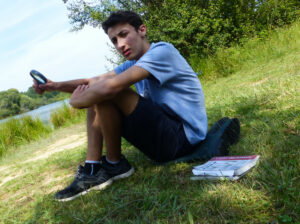
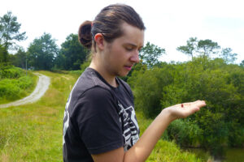

Qui est derriere ODO des Landes ?
L'ASSOCIATION EST NÉE DE LA PASSION ET DE SES ACTEURS.
Au cours de nos promenades, nous avons constaté la diminution des zones humides et leur faune. Nous avons donc pris la décision de créer ODO40.
Guylaine
Avant toute addicte à la nature sauvegardée, c’est au travers de mes randonnées que j’ai appris à observer et photographier ce petit monde si utile et pourtant si fragile. Pour plus d'informations vous pouvez me joindre à ce numéro :
Mael
Diplômé en biologie, je participe à l’identification des odonates et autres invertébrés aquatiques…
Brice
Jeune technicien, mon rôle au sein de cette association est de conseiller techniquement l’évolution de ce site.